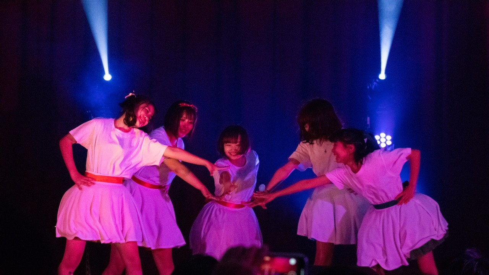
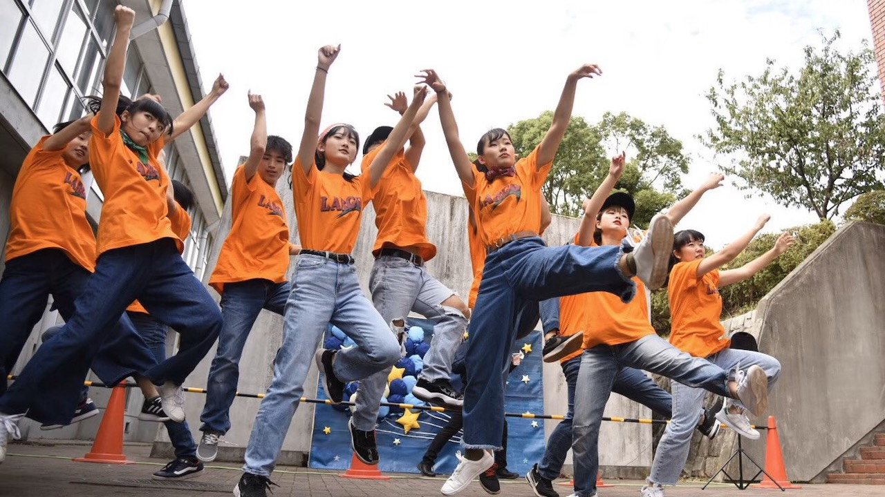

VOCALOID
VOCALOIDとは
キャラクター郡の事をいいます。有名なところでは初音ミクや鏡音リンなどがいます。
当同好会ではそのボーカロイドの歌う曲に合わせて、かわいいからかっこいいまで幅広いダンスが見れます
ほとんどがボーカロイドの踊ってみたのカバーになるので、知ってる方やボカロに興味のある方ぜひ体験に来てください！
K-POP

K-POPとは
J-POPの曲構成とは異なり、ラップがあったり2回目のサビの音が変わったりと個人でのパートも多いです
当同好会では男女ともに活動しており、過去にも男性グループではBTSやPENTAGON
女性グループではTWICEやBLACKPINKなどのコピーを発表しました
男女問わず踊れる曲もたくさんあります、好きなグループがある人や少しでも気になる方はぜひ一緒に踊ってみましょう！
KRUMP

KRUMPとは
ストンプ（足を踏み鳴らす）・チェストポップ（胸を突き出す）・アームスイング（腕を振り下ろす）
の3つの動きがベースとなり、自分の中に秘めている感情を爆発させるアグレッシブなジャンルとなっています
また、バトルやお互いを高め合うセッションがメインとされ、仲間との高め合いを大切にしています
当同好会では基礎の練習を通じての発表はもちろんのこと、クランプの本質でもあるバトルやセッションも
有志にて行っていますので初心者から経験者まで幅広くクランプを楽しめると思います！
I-DOL

IDOLとは
日本のアイドルグループではAKB48、ももいろクローバーZなどが有名です
イベントなどで観客と一緒に盛り上がる為に振り付けが簡単で真似しやすいのが特徴です
当同好会では、ももいろクローバーZや欅坂46などのダンスをやっています
ライブで盛り上がりたい人、踊ってみたいアイドルグループがある人は一緒に踊りましょう！
HIPHOP

HIPHOPとは
踊るのが特徴です。ストリートダンスでは1番有名なジャンルで初心者の人でも始めやすく、HIPHOPの中でも
いくつかの種類に分かれている為、踊る人の個性が表れやすいところも面白さの一つです
当同好会では外部コーチの方をお呼びしてレッスンを受けています。基礎から優しく教えていただけるため
未経験の人でも参加できます他にもライブでHIPHOPダンスを発表している人もいるので
一緒に踊ってみたい人・ダンスを始めたい人は大歓迎です！
POP

POPとは
ロボットやカクカクした動きが好きな人におすすめです！